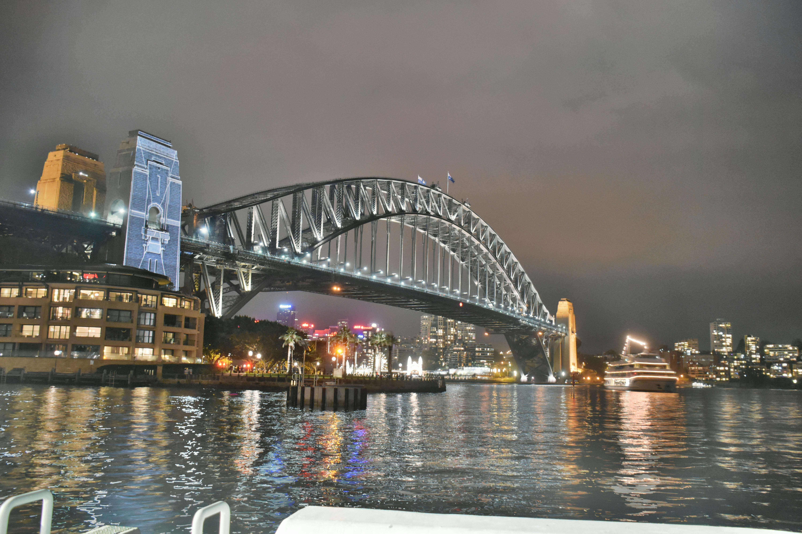
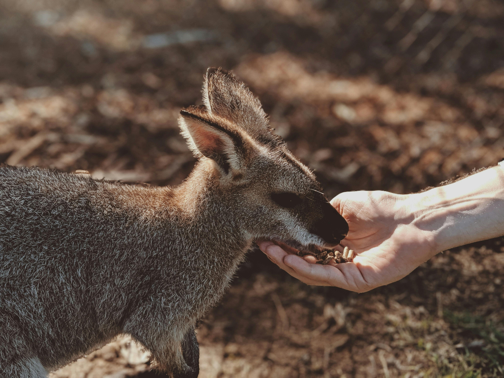
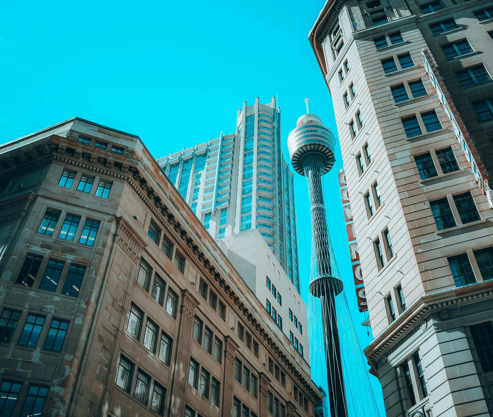

Australia New Zealand

Sydney Harbour Bridge

Opera House

Kangaroo Safari

Gold Coast

Sydney Tower
Best Deal
Starts from 1,22,000
per person on twin sharing
6 Days 7 Nights
2 Cities 1 Country
UAE: Dubai 4N, Abu Dhabi 2N
Days Plan
-
Day 1
Sydney
Arrive in Sydney - A vibrant city is known for its yacht-studded harbour, superb beaches, and the iconic Opera House with its towering sail structure. -
Day 2
Sydney--Opera House
Take a guided tour of Opera House - a multi-venue performing arts centre in Sydney followed by a panoramic city tour which includes the Harbor Bridge, Macquarie's Point and drive through King's Cross. Enjoy magnificent views from Sydney Tower Observatory deck and the Virtual Sky Tour. Later enjoy panoramic tour of Bondi Beach and the GAP. If time permits visit Darling Harbor. Later enjoy Sydney Harbour cruise to enjoy the spectacular view of the Sydney city Skyline. -
Day 3
Syndey--Jervis Bay--Canberra
Today we will start the tour little early. proceed for a scenic drive through Great Pacific Route - one of Australia's prettiest routes, taking you through rain-forests, seaside villages and curving coastline. En-route we visit the Bald Hill lookout which overlooks the iconic Sea Cliff bridge and an amazing place to get some amazing pics. On one side you will see the never ending pacific ocean and on the other side the edge of the cliff. Drive on the Sea Cliff Bridge – a sleek curve of highway that hugs the steep escarpment and sweeps out over the Pacific Ocean. Drive though Wollongong – A coastal city along the Great Pacific Drive Visit Kiama Blowhole - a rugged landscape carved by ancient volcanic lava flows and vents. Proceed to Jervis Bay – A marine park on the South Coast which is home to bottlenose dolphins, seals, penguins and sea birds. We enjoy an adventurous Dolphin Watching cruise. Proceed to Canberra. Overnight at Canberra. -
Day 4
Canberra--Albury
Enjoy a city tour including the Embassy Road, visit to New Parliament House Mt. Ainslie, War Memorial and National Capital Exhibition Centre. Also see the Australian National University. Visit New Parliament house where we take a guided tour of Australia’s iconic building ‘Hight on Capitol Hill’. Enjoy a guided tour of Royal Australian Mint – A heritage site and a multi tourism award winning cultural attraction (subject to operation). Later we visit a vineyard where we enjoy a interactive guided tour along with wine tasting. Proceed to Albury. -
Day 5
Albury--Mt. Buller--Melbourne
Morning proceed to Mt. Buller - the most accessible major snow resort in Australia. Try your hand at skiing, snowboarding, tobogganing etc at your own cost. We also visit Sculpture Park Walk - A diverse collection of sculptural pieces are dotted throughout the Mt Buller Village, and are on display year-round. Later proceed to Melbourne – The capital of Victoria & one of the most liveable cities in the world. -
Day 5
Melbourne--Philip Island
Enjoy orientation tour which includes Town hall and the Old Parliament house, visit St. Patrick cathedral, Captain Cooks cottage from inside (Subject to operation) followed by the Fitzroy garden (Subject to operation). Enjoy the city tram ride. Later visit Melbourne Cricket Ground - Australia's largest, oldest and most popular sporting venue from inside (Subject to operation), followed by the Fitzroy garden Enjoy the city tram ride. Proceed to Philip Island - Proceed to Philip Island – home to the Fairy Penguins, the smallest of the penguin species. En-route visit the Shrine of remembrance. Witness the spectacular world famous Penguin Parade in the evening in Philip Island. -
Day 6
Melbourne--Great Ocean Road
Experience one of the world's finest coastal drives at Great Ocean Road, see the famous 12 Apostles rock formations including the Lock Ard Gorge. Get a birds eye view of the 12 Apostles, Shipwreck Coast, and Port Campbell National Park as you enjoy a breath-taking helicopter ride. Later drive through the Port Campbell National Park. -
Day 7
Departure from Melbourne
Board the flight for your home town. Tour Concludes.
Tour Includes